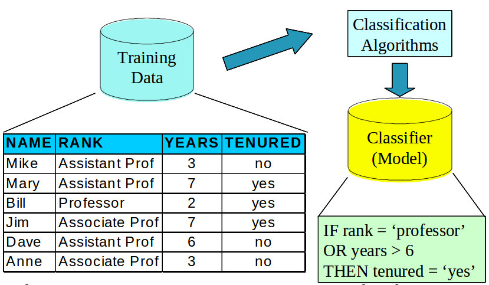
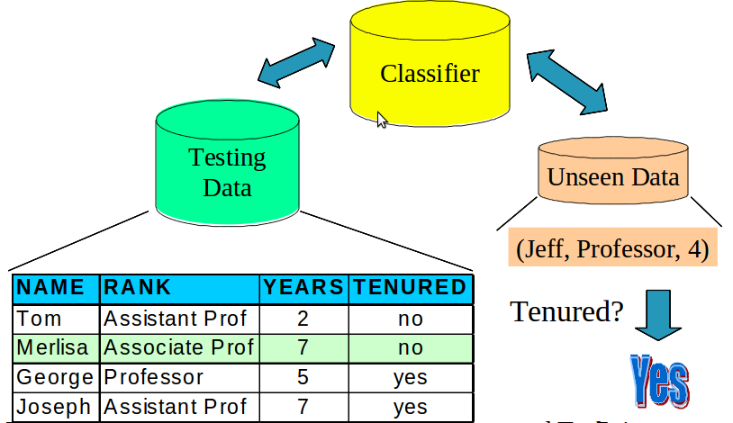
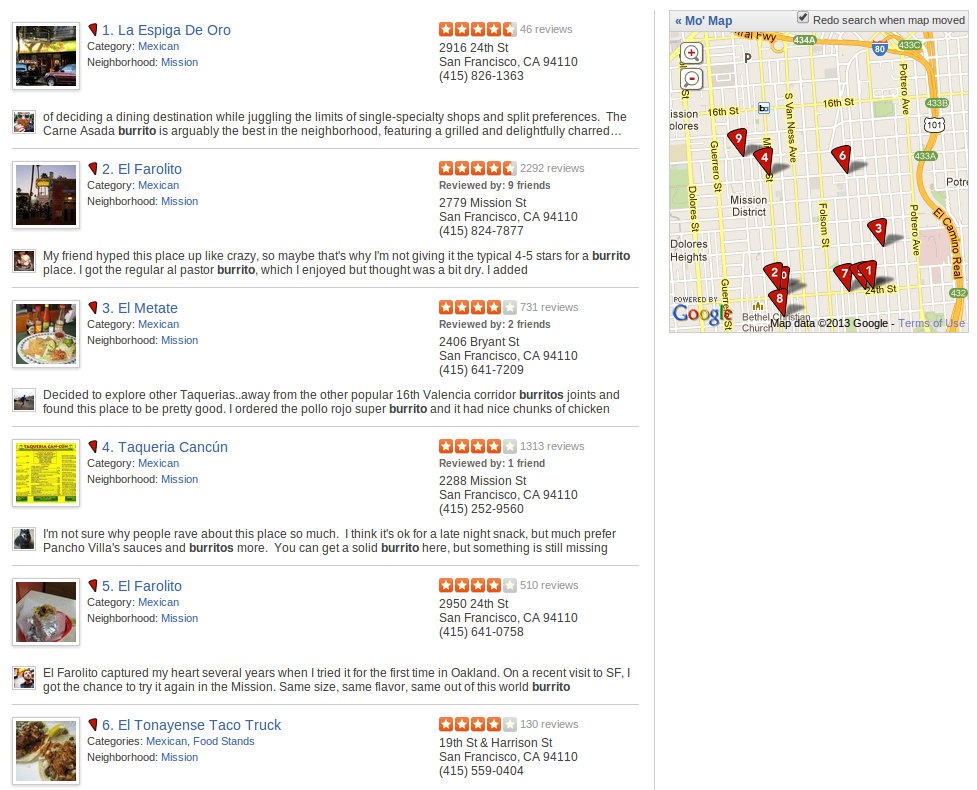
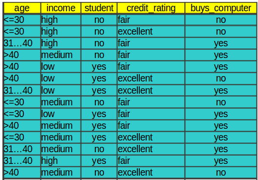

name: inverse layout: true class: left, top, inverse --- ## Classification: Decision Trees --- ## Types of Models ??? ## Details --- ## Types of Models + Classifiers ??? ## Details + Classifiers + describes and distinguishes cases. Yelp may want to find a category for a business based on the reviews and business description --- ## Types of Models + Classifiers + Regressions ??? ## Details + Regressions + Predict a continuous value. e.g., predict a home's selling price given square footage and # of bedrooms --- ## Types of Models + Classifiers + Regressions + Clustering ??? ## Details + Clustering + find "natural" groups of data *without labels* --- ## Types of Models + Classifiers + Regressions + Clustering + Outlier ??? ## Details + Outlier + find anomalous transactions, e.g., finding fraud for credit cards --- ## Process ??? ## Steps + to be able to classify data --- ## Process + Training Set ??? ## Steps + Cleaned, preprocessed data that has labels. What are labels? --- ## Process + Training Set + Learning ??? ## Steps + Feed the training set into an algorithm. Algorithm associates some of the features with the labels and generates a model. --- ## Process + Training Set + Learning + Model / Classifier ??? ## Steps + Process or formula used to predict the label (class) given inputs (data records) --- ## Process + Training Set + Learning + Model / Classifier + Testing Set ??? ## Steps + Data *not in training set*, with labels. Run through model to see how the model compares with the real labels. --- ## Process + Training Set + Learning + Model / Classifier + Testing Set + Verification / Accuracy ??? ## Steps + Given the matches / mismatches in the testing set, how can we measure how well the model reflects reality? --- ## Process + Training Set + Learning + Model / Classifier + Testing Set + Verification / Accuracy + New Data ??? ## Steps + Unseen Data + Finally, we're ready to start using our model / classifier to label new, real, unknown data! So clean and pre-process it the same way. --- ## Process + Training Set + Learning + Model / Classifier + Testing Set + Verification / Accuracy + New Data + Classification ??? ## Steps + Feed in the unknown data and get out results! --- ## Learning  ??? ## Example + We have training data. What are these column types? + Feed it into a classification algorithm + In the case it is generating Rules. + Models can be as simple as this: just a set of rules to follow. We'll see how we can extend this idea + The learning step generates a model: these rules --- ## Classification  ??? ## Possibilities + Now that we have the model / classifier, we can do two things + 1: Use testing data *different* from training data + compare the classifier guesses with reality + 2: Use the classifier on unknown data + Why not just jump into classifying unknown data? Why have a test step? --- ## Machine Learning + Supervised + Given data with a label, predict data without a label + Unsupervised + Given data without labels, group "similar" items together + Semi-supervised + Mix of the above: eg. unsupervised to find groups, supervised to label and distinguish borderline cases + Active + Starting with unlabeled data, select the most helpful cases for a human to label ??? ## Which is this? + In the example above, what type of learning? + Supervised: we have labels, we want to guess unlabeled data --- ## Confusion Matrix + What are the ways that classification can be wrong? | | Predict: Positive | Predict: Negative | |------------------|-------------------|-------------------| | Actual: Positive | True Positive | False Negative | | Actual: Negative | False Positive | True Negative | ??? ## Basis for Evaluation + Most methods of evaluating results start with the confusion matrix + Figuring out what different ways you were right or wrong + Then using different formulas to emphasize the things you care about --- ## Recall & Precision + Recall: ```TP / P``` + Precision: ```TP / (TP + FP)``` + Sometimes these are in tension; other measurements balance them ??? ## Trade-off + Classic trade-off in search --- ## Example: Search  ??? ## Searching Yelp + Searched yelp for a burrito in the Mission + How good are these search results? + Let's say we knew this first result was great, and *only* returned it + What would our precision be? + What would the recall be? + How could we improve recall? + How can we guarantee 100% recall? + What will that do to the precision? + Understand ways of combining these measurements in the book --- ## Decision Trees + Rules formulated as a tree of decisions + Choose Your Own Adventure for machine learning + So how do we build the trees? ??? ## Rules expressed as trees + At each node in the tree, pose a question + Take a branch depending on your answer + Leaf nodes are labels --- ## Build a Tree ??? ## Directions + First node question: is rank=professor? + If True, what's the label? + If False, we go to another node + Second node question: is years > 6? + If True what's the label? + If False, what's the label? --- ## Build a Tree  ??? ## Next challenge + How to go from a data set like this --- ## Build a Tree <img src="img/tree.png" width=100% /> ??? ## Result + To a tree like this? --- ## Decision Tree Induction + Start with all the data + Choose the "best" way to divide it up based on one attribute + Make a node that asks a question to split the data + Choose new "best" way to divide based on remaining attributes + Stop: no attributes left, all records are the same class ??? ## Recursive + Look at all the attributes. What's the best way to split up the data? + We'll look at way to mathematically evaluate splits + Now recursively do the same + If you've split on all the attributes, but still have a mix, use a majority rule + If all the records are the same class, you don't have to keep spitting: your answer is right there! + For continuous data, must bucket it so you can have a discrete number of answers --- ## Information Gain + Comparison of how mixed results are before and after splitting + Entropy measurement of "mixed" + Two pure data sets have less entropy on average than one mixed ??? ## Information + Book will go into detail about how to think about entropy + General idea: how difficult would it be to memorize the data sets? + Easy if pure: all class A + Still fairly easy if 2 pure sets: 1 is class A, other is class B + Now more difficult if they are mixed: first 2 records are A, then one B, then another A --- ## Gini Index ```python Gini(D) = 1 - sum(frac**2 for frac in classes) ``` Sum of the squares of the fraction of items in each class ??? + D is a given partitioning of the data --- ## Splitting + Discrete values can split per value + Or discrete values binary split into subsets + Continuous values can split on range (usually 2) ??? ## Different + If you'd like a binary tree (useful for some algorithms), can split on subsets + Can't split 400 different ways on continuous values... what about values that haven't been seen before? --- ## Continuous Splitting + Test every split point to see which is best + Possible split points: midpoint between every adjacent value pair + Sort attribute, score midpoints 1 2 2 2 26 36 36 74 323 345 2234 ??? ## Review + What does best mean? + Can calculate with one pass through the data since you are just moving a few cases from one class to another --- ## Decision Tree Advantages + Models easy to understand and visualize + Can be faster to construct + Can encode tree in declarative languages (SQL) + Robust: outliers generally fit in with normal data ??? ## Trees + Its a tree! Easy to draw + Greedy algorithm means you're only go over the data so many times + Models can translate into database statements + Outliers don't have a numeric pull on the data (similar to difference between median and mean) --- ## *Break*